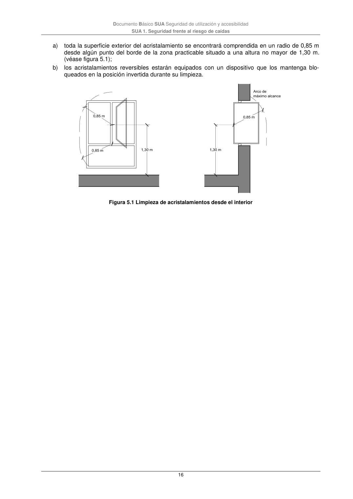

DB-SUA · 5 Limpieza de los acristalamientos exteriores · versión 2022-06-14 · capa oficial
Formatos: JSON compacto · Markdown · PDF fuente
Ámbito del documento · texto del ámbito · documento y tablas
ID técnico a0059 · PDF pág. 15-17 · jerarquía no validada por persona · contrastado con el literal de la página 15 (marcador PDF); no validado por persona · padre: a0036
Limpieza de los acristalamientos exteriores 1 En edificios de uso Residencial Vivienda, los acristalamientos que se encuentren a una altura de más de 6 m sobre la rasante exterior con vidrio transparente cumplirán las condiciones que se indican a continuación, salvo cuando sean practicables o fácilmente desmontables, permitiendo su limpieza desde el interior: Documento Básico SUA Seguridad de utilización y accesibilidad SUA 1. Seguridad frente al riesgo de caídas 16 a) toda la superficie exterior del acristalamiento se encontrará comprendida en un radio de 0,85 m desde algún punto del borde de la zona practicable situado a una altura no mayor de 1,30 m. (véase figura 5.1); b) los acristalamientos reversibles estarán equipados con un dispositivo que los mantenga blo- queados en la posición invertida durante su limpieza. Figura 5.1 Limpieza de acristalamientos desde el interior Documento Básico SUA Seguridad de utilización y accesibilidad SUA 2. Seguridad frente al riesgo de impacto o de atrapamiento 17

PDF fuente redistribuible: copia fiel enlazada en esta página (SHA256 verificado).